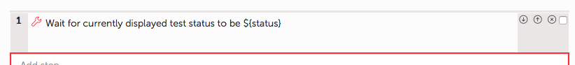
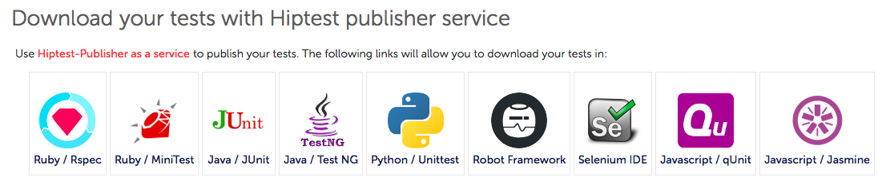
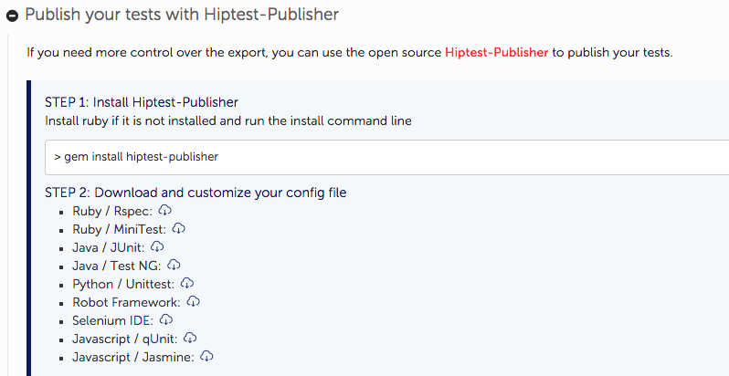
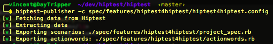
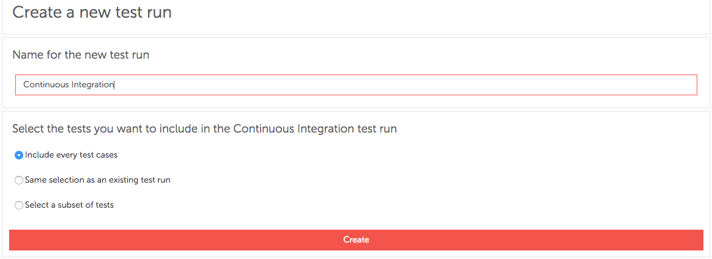
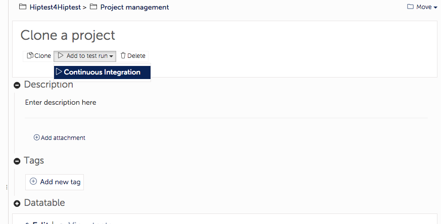
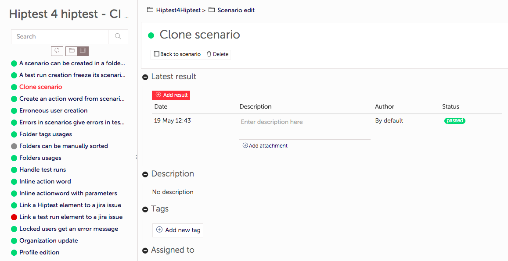

Hiptest & automation
- Basics about Hiptest
- 5 steps for a successful automation
- Demo
- Basics about Hiptest
- 5 steps for a successful automation
- Demo
What's Hiptest ?
Test management in the cloud
BDD framework
What we believe in
Our philosophy for automation
Developers and testers working together
Good design lead to good automation
Action words defines your DSL
Action words are implemented and stored with the application code
Sample presentation
Not a vanilla example
Real life use-case
About 200 tests and action words
More than 600 CI builds
- Basics about Hiptest
- 5 steps for a successful automation
- Demo
Roadmap to CI integration
Roadmap to CI integration
Structuring project
Scenarios contain only calls to action words
it "Organization update" do
load_coffee_machine_project
create_organization_named_name("Hiptest")
check_organization_name_exists("Hiptest")
check_organization_has_count_users("2")
remove_user_name_from_organization("john")
check_organization_has_count_users("1")
add_user_email_to_the_organization("john@hiptest.net")
check_organization_has_count_users("2")
close_browsers
end
Structuring project
Two type of action words:
high-level: only call other action words

leaf: only contain action/result steps
Roadmap to CI integration
Using hiptest-publisher as a service
Using command line
> gem install hiptest-publisher
> hiptest-publisher --token=123456 --language=javascript
Getting a configuration file

token = '123456789'
language=javascript
framework=jasmine
output_directory = './'
Do not forget to store that in Git/SVN
Fetching the code
Roadmap to CI integration
Implementing the action words
Well, that's your job ;)
And again, keep it in Git/SVN
Roadmap to CI integration
Configuring for CI
Create a dedicated test run
Add the scenario to the test run
Roadmap to CI integration
Update CI build config
Install hiptest-publisher on CI slave
gem install hiptest-publisherFetch tests before execution
hiptest-publisher --tests-only --test-run-id=3054
-c hiptest-publisher.config Push results after execution
hiptest-publisher -c hiptest-publisher.config -p results.xmlObserve the results in the test run
Start again
- Basics about Hiptest
- 5 steps for a successful automation
- Demo